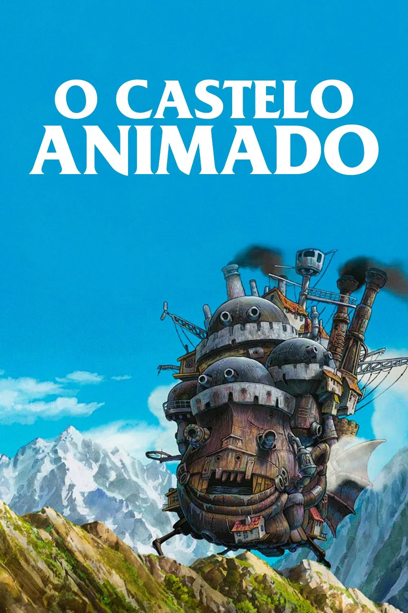

O Castelo Animado (2004), dirigido por Hayao Miyazaki, é uma animação do Studio Ghibli baseada no livro de Diana Wynne Jones. A trama acompanha Sophie, uma jovem chapeleira transformada em uma idosa de 90 anos por uma bruxa vingativa. Ao buscar ajuda, ela encontra o castelo móvel do misterioso Mago Howl, tornando-se faxineira e envolvendo-se em uma aventura mágica, romântica e antibelicista.
alugar